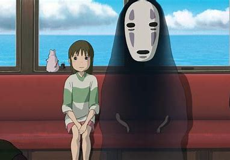

Spirited Away
Spirited Away is a Japanese animated fantasy film written and directed by Hayao Miyazaki. It follows the story of a young girl who gets trapped in a mysterious world ruled by spirits. With stunning animation and a captivating storyline, Spirited Away is a must-watch for any anime fan.
Rating: 9/10
Worth Watching: Yes
My Neighbor Totoro
My Neighbor Totoro is a heartwarming tale of two sisters who move to the countryside and encounter friendly forest spirits, including the iconic Totoro. This film is a delightful blend of fantasy and innocence, suitable for audiences of all ages.
Rating: 8.5/10
Worth Watching: Yes